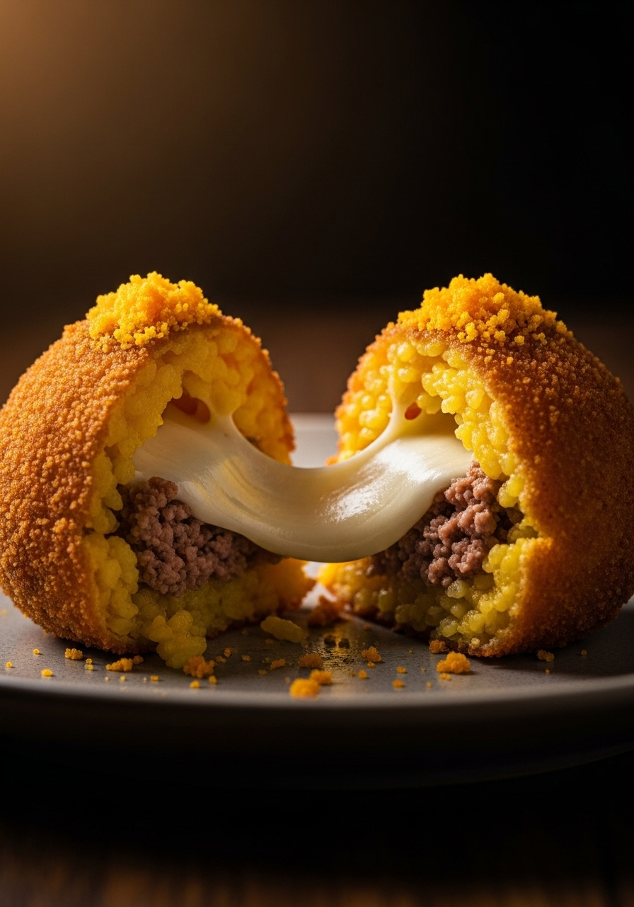

Home › Antipasti › Arancini Siciliani — Croccanti Polpette di Riso con Ragù e Mozzarella
Antipasti
Arancini Siciliani — Croccanti Polpette di Riso con Ragù e Mozzarella
Gli arancini sono uno dei più grandi street food mai inventati. Croccanti, dorati, incredibilmente soddisfacenti — un guscio di risotto allo zafferano racchiude un cuore fuso di ragù di carne cotto lentamente e mozzarella filante. Questa è la ricetta siciliana autentica, preparata correttamente da zero.
Arancini: Palermo vs Catania — Il Dibattito sulla Forma
In Sicilia, gli arancini sono una cosa seria — e la forma è una questione di forte identità regionale. A Palermo, gli arancini sono rotondi (come le arance — 'arancini' significa 'arancette' in siciliano). A Catania e nella parte orientale dell'isola, sono a forma di cono, a rappresentare l'Etna. Entrambe le versioni contengono gli stessi ripieni, ma i catanesi saranno offesi se li fai rotondi. Se non sai da che parte stai, falli rotondi — è il classico.
Posso Cuocerli al Forno invece di Friggerli?
Sì, ma il risultato è diverso. Gli arancini al forno hanno una crosticina più asciutta e meno dorata che non si sbriciola allo stesso modo soddisfacente. Se devi cuocerli al forno: spennellali con olio d'oliva e cuoci a 200°C per 25-30 minuti, girandoli a metà. Il risultato è comunque buono, ma se ti stai dando la pena di preparare gli arancini da zero, friggerli vale davvero la pena.
Arancini Siciliani — Croccanti Polpette di Riso con Ragù e Mozzarella — Ricetta Completa
Ingredienti
400g riso Arborio o Carnaroli
1 litro di brodo di pollo o vegetale, caldo
1 pizzico di fili di zafferano
1 cipolla bianca, tritata finemente
80g Parmigiano Reggiano, grattugiato
30g burro
— Per il ragù —
200g carne macinata di manzo
100g piselli surgelati
1 barattolo (400g) di pomodori pelati tritati
1 cipolla piccola · 1 spicchio d'aglio
— Per la panatura e la frittura —
200g mozzarella fresca, tagliata a cubetti piccoli
3 uova, sbattute · 200g pangrattato
Olio neutro per friggere in abbondanza
Procedimento
Prepara il ragù: soffriggi cipolla e aglio in olio d'oliva per 5 minuti. Aggiungi la carne, falla rosolare bene. Aggiungi pomodori tritati, piselli, sale e pepe. Fai sobbollire 25-30 minuti finché è denso. Fai raffreddare completamente.
Prepara il risotto: soffriggi la cipolla nel burro finché è morbida. Aggiungi il riso, tostalo 2 minuti. Aggiungi il brodo con lo zafferano mestolo per mestolo, mescolando finché viene assorbito. Cuoci 18-20 minuti al dente. Incorpora il Parmigiano. Stendi su un vassoio e fai raffreddare completamente — minimo 1 ora.
Forma gli arancini: bagnati le mani. Prendi una manciata di riso freddo (~70g), appiattiscila come un disco nel palmo. Metti 1 cucchiaio di ragù e 1-2 cubetti di mozzarella al centro. Chiudi il riso attorno al ripieno, dando forma decisa a una palla o un cono. Ripeti.
Pana gli arancini: rotola ciascuno nell'uovo sbattuto, poi nel pangrattato. Premi bene affinché la panatura aderisca. Per una crosticina extra, fai una doppia panatura (uovo → pangrattato → uovo → pangrattato).
Metti gli arancini panati in frigo per 30 minuti — questo li aiuta a mantenere la forma durante la frittura.
Scalda l'olio a 175°C in una pentola profonda. Friggi 3-4 arancini alla volta per 3-4 minuti, girandoli delicatamente, finché sono dorati uniformemente. Non sovraffollare la pentola.
Scola su carta assorbente. Aspetta 3-4 minuti prima di mangiare — l'interno deve raffreddarsi leggermente altrimenti ti scotti la bocca con il formaggio fuso.
Consigli dello Chef
Il risotto DEVE essere completamente freddo prima di formare gli arancini — il risotto caldo si sgretola.
Le mani bagnate evitano che il riso si attacchi.
La doppia panatura dà una crosticina più croccante e resistente.
La temperatura dell'olio è fondamentale: troppo freddo = unto, troppo caldo = bruciato fuori e crudo dentro.

Preparazione in Anticipo e Conservazione
Gli arancini si possono preparare in anticipo per fasi. Il ragù e il risotto si possono preparare 2 giorni prima. Gli arancini formati e panati si conservano in frigo per 24 ore prima di friggere. Gli arancini fritti si riscaldano bene in forno a 180°C per 10 minuti — recuperano quasi tutta la croccantezza.
Domande Frequenti
Perché i miei arancini si sfaldano durante la frittura?
Il risotto era ancora tiepido quando li hai formati, o non li hai pressati abbastanza saldamente. Anche il ripieno potrebbe essere troppo liquido — assicurati che il ragù sia denso, non acquoso. Il raffreddamento in frigo prima di friggere aiuta a mantenerli integri.
Posso congelare gli arancini?
Sì — congelali dopo la panatura ma prima di friggerli. Congelali prima su un vassoio, poi trasferiscili in sacchetti. Friggili direttamente dal congelatore a 165°C per 5-6 minuti. Oppure congela già fritti, riscalda in forno a 180°C per 15-20 minuti.
Qual è il miglior riso per gli arancini?
Arborio o Carnaroli — lo stesso riso ad alto contenuto di amido usato per il risotto. L'amido è ciò che rende il riso abbastanza appiccicoso da mantenere la forma. Non usare riso a grana lunga come il basmati.
Cosa posso usare come ripieno invece del ragù?
Spinaci e ricotta è un ripieno vegetariano popolare. Prosciutto e mozzarella è un classico. Pistacchio e prosciutto è una specialità catanese. Burro e Parmigiano è il più semplice. Qualunque cosa usi deve essere fredda e non troppo umida.
Come capisco quando l'olio è abbastanza caldo?
Usa un termometro per precisione (175°C). Senza: lascia cadere un po' di pangrattato — deve sfrigolare immediatamente e salire in superficie. Se affonda e rimane lì, l'olio è troppo freddo.